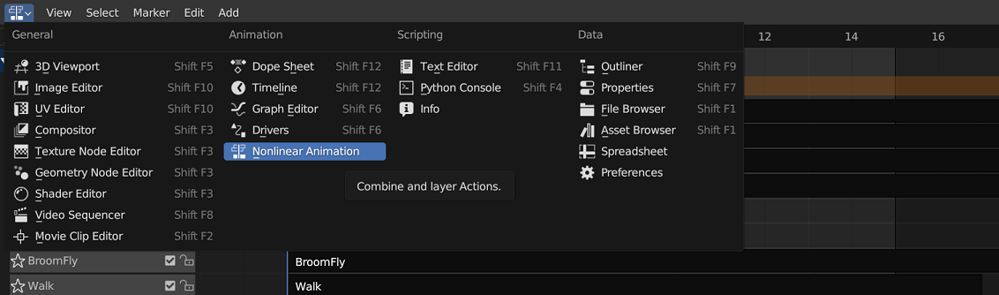
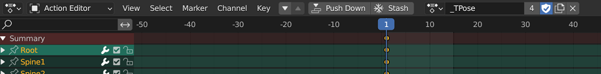

Exporting FBX From Blender to Unity
Here’s a quick guide on how to export FBX from Blender to Unity. You can also refer to these videos that I referenced.
- Polyfable - Blender to Unity with Correct Axis | Tutorial
- Imphenzia - Rigify to Unity Tutorial - How to Export a Rigify Character and Import it into Unity
Assuming that you have already rig and animated your character, follow the steps below to export your character as FBX.
Step 1. Set up the NLA Strips
In Blender, under animation window, select Nolinear Animation

Drag a new window, and select Dope Sheet. Change to Action Editor. Select the animation you want and click on Push Down. This will create the NLA Strip. Note: _TPose should be the last NLA Strip.

Step 2. Exporting as FBX in Blender
In Blender, select the mesh that you want to export and click on File –> Export –> FBX. When the export menu will pop up, configure the following parameters:
- under Include section
- check Selected Objects
- select Mesh and Armature for Object Type
- under Transform section
- apply scaling = FBX Unit Scale
- forward = -Y Forward (when modelling, character should be facing - y direction)
- up = Z up (when modelling, the up should be +z)
- under Armature
- check Only deform Bones
- uncheck Add Leaf Bones
- under Bake animation section
- uncheck all actions (Exporting NLA Strips only)
Step 3. Importing FBX to Unity
In Unity, drag and drop the fbx file into a folder
- in the inspector for the fbx file,
- under model, check bake axis conversion (so that the character faces the correct direction)
- under animation, click on clips and check Loop Time